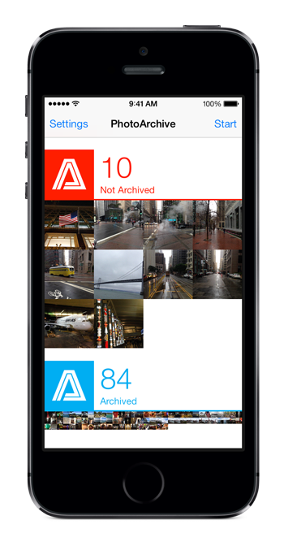
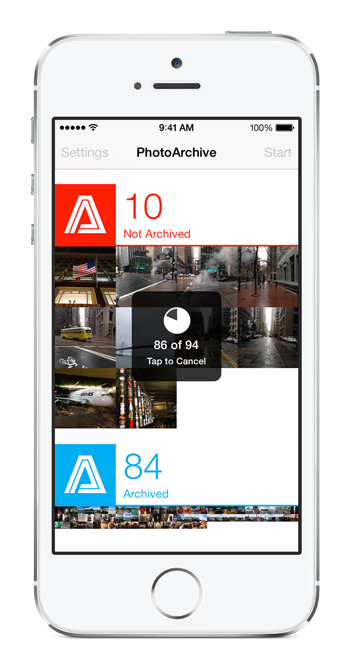

I take a lot of photos & videos with my iPhone. It’s always with me, so it’s convenient, and the quality is good. My DSLR body and lenses produce superior quality, but are usually left at home gathering dust.
When I take new photos or videos, often of my family, I worry that if something were to happen to my iPhone, those irreplaceable memories will be lost forever.
There are many solutions for this need, for example iCloud Backup, the Dropbox app, or the Amazon Cloud Drive app, but they all have varying costs and limitations. I wanted a simple solution for me, and that’s why I decided to build an app as a side project - PhotoArchive for iPhone. When released, PhotoArchive will be free for everyone on the App Store.
What it looks like
 
What it does
I have a Western Digital My Book NAS (Network Attached Storage) at home that is always on. I use it for file storage for computers on the network, and DLNA streaming to the living room TV via the PS3.
I copy new photos & videos from my and my wife’s iPhones by manually connecting them to a computer via USB, and downloading the new ones. Because it’s a tedious manual process I don’t do it as often as I should.
What PhotoArchive does is copy new photos & videos from your iOS device to an FTP server, over Wi-Fi. The Western Digital My Book NAS, like most NAS, supports FTP (File Transfer Protocol).
This means that when I get home I can effortlessly back up new photos & videos I’ve taken that day - no turning on computers, no USB cables etc.
What it does (marketing version)
What does PhotoArchive do?
PhotoArchive saves your irreplaceable memories, your photos & videos from your iPhone, iPad, or iPod touch to your home storage over Wi-Fi.
-
Save Time - Stop manually backing up your device to iTunes. Are you still using a USB cable? Stop manually backing up your photos & videos by importing them into iPhoto. You may still import them into iPhoto, but you can do it when you have time, not when you have to - your photos & videos are already safe!
-
Save Money - Use iCloud Backup to back up everything except your Camera Roll, so there is no need to manually back up your device to iTunes. Turn off the Camera Roll from iCloud Backup, and stay under the 5.0 GB free limit.
-
Archives - Does not synchronise. Will not download photos or videos from your home storage to your device.
-
Never Deletes - Will never delete a photo or video from your home storage, or from your device.
-
Smart Archive - Remembers the previous archive, and will only upload new photos & videos, so it’s FAST!
-
Smart Photo View - Shows you your photos & videos that are in danger of being lost forever (not archived), and the ones that are safe in the event that something happens to your device (archived).
-
Full Resolution and Metadata - Uploads your photos & videos in their full resolution, with all metadata - information about your photos & videos, e.g. where you took them.
How does PhotoArchive work?
PhotoArchive archives to your home storage - NAS (Network Attached Storage) or Mac/PC, using FTP (File Transfer Protocol). Most NAS devices already support FTP, but if you are using a Mac/PC you will need an FTP server.
FTP should only be used on Wi-Fi with WPA2 security, with your storage on the same network. Don’t do it over the Internet! Be security smart.
Design thinking
The main view that greets the user visually shows them all photos & videos on their iOS device, grouped into state - not archived, or archived. It first shows photos & videos that are not archived (in danger of being lost forever), and then photos & videos that are archived (safe).
The user can either setup their archive destination, or start archiving if already setup and there are new photos or videos.
I took inspiration from the iOS Photos app, and show photos & videos as varying square sizes.
The Not Archived section photos & videos are shown as large squares up to a certain number, and then get smaller. Large squares let you see the few photos & videos that you haven’t archived up close. If there’s lots, then they are shown as small squares to give you a visual sense of how many there are. The section header is the PhotoArchive logo on red - danger!
The Archived section shows photos & videos as small squares; they are safe, so you don’t need to see what they are, just get a visual sense of how many there are. The section header is the PhotoArchive logo on blue (this is the app icon) - safe.
The design allows both sections to appear together on the main view without much scrolling required.
When will it be released
PhotoArchive is functionally complete. I’m currently cleaning, polishing and testing it. It would be great to have a few testers, so if you’d like to test it out and are willing to provide feedback, then contact me.
The future
Since the purpose of PhotoArchive is to save your irreplaceable memories, i’ve thought about adding support for offsite archiving to cloud storage such as Amazon S3 or Glacier.
Amazon Glacier is attractive because of it’s extreme lost cost - USD$0.01 per GB (gigabyte) per month. That’s just over USD$10 per month to archive 1TB (terabyte) of photos & videos!